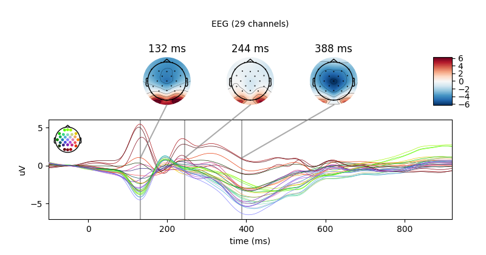
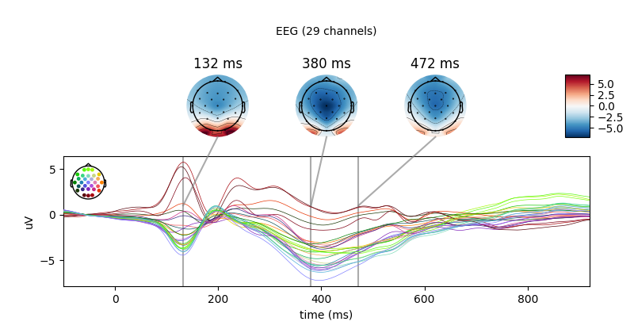

Note
Click here to download the full example code
Pandas querying and metadata with Epochs objects¶
Demonstrating pandas-style string querying with Epochs metadata.
For related uses of mne.Epochs, see the starting tutorial
The Epochs data structure: epoched data.
Sometimes you may have a complex trial structure that cannot be easily
summarized as a set of unique integers. In this case, it may be useful to use
the metadata attribute of mne.Epochs objects. This must be a
pandas.DataFrame where each row corresponds to an epoch, and each
column corresponds to a metadata attribute of each epoch. Columns must
contain either strings, ints, or floats.
In this dataset, subjects were presented with individual words on a screen, and the EEG activity in response to each word was recorded. We know which word was displayed in each epoch, as well as extra information about the word (e.g., word frequency).
Loading the data¶
First we’ll load the data. If metadata exists for an mne.Epochs
fif file, it will automatically be loaded in the metadata attribute.
# Authors: Chris Holdgraf <choldgraf@gmail.com>
# Jona Sassenhagen <jona.sassenhagen@gmail.com>
# Eric Larson <larson.eric.d@gmail.com>
# License: BSD (3-clause)
import mne
import numpy as np
import matplotlib.pyplot as plt
# Load the data from the internet
path = mne.datasets.kiloword.data_path() + '/kword_metadata-epo.fif'
epochs = mne.read_epochs(path)
# The metadata exists as a Pandas DataFrame
print(epochs.metadata.head(10))
Out:
Reading /home/circleci/mne_data/MNE-kiloword-data/kword_metadata-epo.fif ...
Isotrak not found
Found the data of interest:
t = -100.00 ... 920.00 ms
0 CTF compensation matrices available
960 matching events found
No baseline correction applied
Adding metadata with 8 columns
0 projection items activated
WORD ... VisualComplexity
0 film ... 55.783710
1 cent ... 63.141553
2 shot ... 64.600033
3 cold ... 63.657457
4 main ... 68.945661
5 poet ... 70.572593
6 case ... 71.983982
7 land ... 65.601033
8 idea ... 70.667496
9 love ... 61.394212
[10 rows x 8 columns]
We can use this metadata attribute to select subsets of Epochs. This
uses the Pandas pandas.DataFrame.query() method under the hood.
Any valid query string will work. Below we’ll make two plots to compare
between them:
av1 = epochs['Concreteness < 5 and WordFrequency < 2'].average()
av2 = epochs['Concreteness > 5 and WordFrequency > 2'].average()
joint_kwargs = dict(ts_args=dict(time_unit='s'),
topomap_args=dict(time_unit='s'))
av1.plot_joint(show=False, **joint_kwargs)
av2.plot_joint(show=False, **joint_kwargs)
- 
- 
Next we’ll choose a subset of words to keep.
words = ['film', 'cent', 'shot', 'cold', 'main']
epochs['WORD in {}'.format(words)].plot_image(show=False)

Out:
5 matching events found
No baseline correction applied
Not setting metadata
0 projection items activated
0 bad epochs dropped
Note that traditional epochs sub-selection still works. The traditional MNE methods for selecting epochs will supersede the rich metadata querying.
epochs['cent'].average().plot(show=False, time_unit='s')
Below we’ll show a more involved example that leverages the metadata of each epoch. We’ll create a new column in our metadata object and use it to generate averages for many subsets of trials.
# Create two new metadata columns
metadata = epochs.metadata
is_concrete = metadata["Concreteness"] > metadata["Concreteness"].median()
metadata["is_concrete"] = np.where(is_concrete, 'Concrete', 'Abstract')
is_long = metadata["NumberOfLetters"] > 5
metadata["is_long"] = np.where(is_long, 'Long', 'Short')
epochs.metadata = metadata
Out:
Replacing existing metadata with 10 columns
Now we can quickly extract (and plot) subsets of the data. For example, to look at words split by word length and concreteness:
query = "is_long == '{0}' & is_concrete == '{1}'"
evokeds = dict()
for concreteness in ("Concrete", "Abstract"):
for length in ("Long", "Short"):
subset = epochs[query.format(length, concreteness)]
evokeds["/".join((concreteness, length))] = list(subset.iter_evoked())
# For the actual visualisation, we store a number of shared parameters.
style_plot = dict(
colors={"Long": "Crimson", "Short": "Cornflowerblue"},
linestyles={"Concrete": "-", "Abstract": ":"},
split_legend=True,
ci=.68,
show_sensors='lower right',
show_legend='lower left',
truncate_yaxis="max_ticks",
picks=epochs.ch_names.index("Pz"),
)
fig, ax = plt.subplots(figsize=(6, 4))
mne.viz.plot_compare_evokeds(evokeds, axes=ax, **style_plot)
plt.show()
To compare words which are 4, 5, 6, 7 or 8 letters long:
letters = epochs.metadata["NumberOfLetters"].unique().astype(int).astype(str)
evokeds = dict()
for n_letters in letters:
evokeds[n_letters] = epochs["NumberOfLetters == " + n_letters].average()
style_plot["colors"] = {n_letters: int(n_letters)
for n_letters in letters}
style_plot["cmap"] = ("# of Letters", "viridis_r")
del style_plot['linestyles']
fig, ax = plt.subplots(figsize=(6, 4))
mne.viz.plot_compare_evokeds(evokeds, axes=ax, **style_plot)
plt.show()
Out:
Integer colors detected, mapping to rank positions ...
And finally, for the interaction between concreteness and continuous length in letters:
evokeds = dict()
query = "is_concrete == '{0}' & NumberOfLetters == {1}"
for concreteness in ("Concrete", "Abstract"):
for n_letters in letters:
subset = epochs[query.format(concreteness, n_letters)]
evokeds["/".join((concreteness, n_letters))] = subset.average()
style_plot["linestyles"] = {"Concrete": "-", "Abstract": ":"}
fig, ax = plt.subplots(figsize=(6, 4))
mne.viz.plot_compare_evokeds(evokeds, axes=ax, **style_plot)
plt.show()
Out:
Integer colors detected, mapping to rank positions ...
Note
Creating an mne.Epochs object with metadata is done by passing
a pandas.DataFrame to the metadata kwarg as follows:
data = epochs.get_data()
metadata = epochs.metadata.copy()
epochs_new = mne.EpochsArray(data, epochs.info, metadata=metadata)
Out:
960 matching events found
No baseline correction applied
Adding metadata with 10 columns
0 projection items activated
0 bad epochs dropped
Total running time of the script: ( 0 minutes 8.486 seconds)
Estimated memory usage: 8 MB